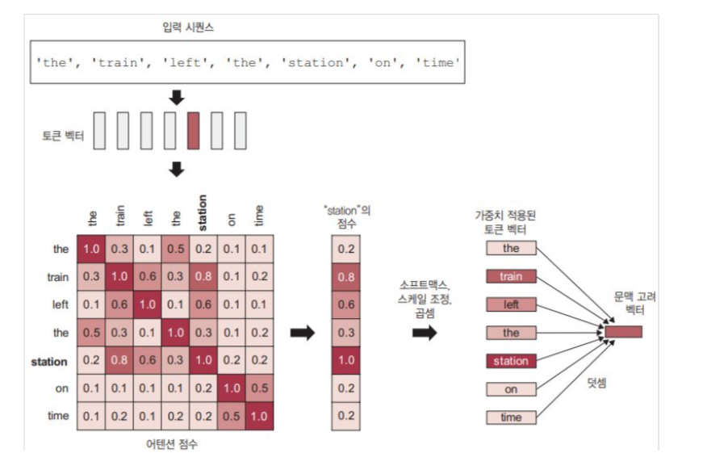

IPCG 랩 정기 세미나 — Transformer
IPCG 랩 격주 세미나에서 케라스 창시자에게 배우는 딥러닝의 Transformer 파트의 일부를 발표하였습니다.
1. 초기의 자기 주목 연구 : Non-local 신경망
Non-local 신경망은 자기 주목을 컴퓨터 비전에 최초 도입한 논문임.
$$y_i = \frac{1}{\mathcal{C}(x)} \sum_{\forall j} f(x_i, x_j) g(x_j)$$
$x_i$가 $x_j$에 얼마나 주목해야 하는지 나타 낸 값인 $a(x_i,x_j)$가 확인 되어짐.
2. Self Attention

Transformer 가 등장 이전 기계 독해 혹은 자연어 추론에서 자기 주목개념이 등장 하기 시작함
입력과 출력을 비교하는 것이 아닌 문장 내 단어들이 얼마나 연관되어 있는지 파악 함
이때까지는 자기 주목이 메인이 아니라
기존의 RNN 혹은 CNN 아키텍쳐 위에 얹어서 사용하는 보조장치 였음
그러나 2017년에 Transformer가 나오며
병목 현상이 생기던 RNN과 CNN이 빠지고 '자기 주목'이 주가 되었음
3. Transformer

3-1. 자기 주목의 존재 이유
"I went to the bank to deposit money." (은행)
"I sat on the bank of the river." (강둑)
Self-Attention의 목적은 시퀀스에 있는 관련된 토큰의 표현을 사용,
한 토큰의 표현을 조절하여 문맥에 고려한 토큰 표현을 만듬.
3-2. 세 가지 핵심
Query : 현재 위치의 단어가 다른 단어들에게 던지는 질문
Key : 각 단어가 제공할 수 있는 정보
Value : 단어가 실제로 보유한 정보
이 과정을 수학적으로 풀어내기 위해 문장의 모든 단어를 세 가지로 나눔
"The cat sat on the mat."를 예제로
Q : "cat"이 Q로서 시작하면 문장 속에서 자신과 관련된 정보를 찾고자 함
K : "The", "sat".. 등이 "cat"의 Q와 나머지 단어들의 Key들을 비교하여 관계 평가
V : Query가 연관된 Key를 찾아내면 그 단어의 정보가 강조되거나 약화되어짐
Q와 K를 비교 할 때 내적을 사용함
수학적으로 두 벡터를 내적한다는 것은 두 값이 얼마나 유사한 가를 측정하기 때문임
3-3. 수식
$$ C = \text{softmax}\left(\frac{QK^T}{\sqrt{d_{key}}}\right)V $$
이때 $ Q = XW^Q, K = XW^K, V = XW^V $ 이며,
Q와 K는 $T*d_{key}$ 이고 V는 $T*d_{value}$
$d$는 Dimension(차원)의 약자로 벡터가 몇개의 숫자로 이루어 져있는가를 의미
1. 입력 데이터 X
우선 X의 차원은 $T*d_{model}$인 것을 확인 할 수 있음.
T는 문장의 길이 이며 $d_{model}$은 각 단어 혹은 픽셀/프레임을 표현하는 벡터의 크기(임베딩 차원)임
2. Q, K
Q와 K는 $T*d_{key}$인 것을 확인 할 수 있으며 이는 내적을 위해 동일한 길이를 갖기 위함
그러기에 $d_{value}$ 없이 $d_{key}$라는 같은 값을 지니게 되었음
여기서 $d_{key}$는 벡터의 차원(크기)를 의미함.
즉, 특징의 개수를 의미 ( 여기선 $d_{value}$와 다르게 검색 조건의 디테일 이라고 생각하면 편함 )
3. V
V는 $T*d_{value}$인 것을 확인.
Q, K와 달리 서로 비교하지 않고 가중치가 정해지면 곱해질 실제 정보
$d_{value}$는 전달할 핵심 정보의 특징
4. 수식계산
$\mathbf{Q}\mathbf{K}^T$ : 어텐션 스코어 계산
$\mathbf{K}^T$는 $\mathbf{K}$와 $Q$를 연산하기 위한 $K$의 전치행렬
$(T \times d_{key}) \times (d_{key} \times T) = \mathbf{T \times T}$의 행렬이 나옴

$\sqrt{d_{key}}$ : 스케일링
Attention Score의 모든 원소를 나누어 계산된 점수들의 크기를 억누름
$softmax$ : 소프트 맥스
각 행에 대해 $softmax$를 적용하여 총 합이 1이 되는 확률로 변경시킴
이로인해 가중치 지도가 완성이 되어짐
$\times \mathbf{V}$ : 진짜 정보와 섞기
가중치 지도의 차원 : $T \times T$
$\mathbf{V}$의 차원 : $T \times d_{value}$
곱셈 결과로 $(T \times T) \times (T \times d_{value}) = \mathbf{T \times d_{value}}$가 나오며 이는 문맥이 반영된 단어 벡터임
교수님 피드백
곽노윤 교수님께서 "DDPM과 Score-based Model의 관계를 더 깊이 탐구해볼 것"을 제안해 주셨습니다. 또한 이미지 처리 관점에서 Diffusion을 노이즈 제거(Denoising) 문제로 해석하는 시각도 공유해 주셨습니다.
다음 계획
- Score Matching과 DDPM의 수학적 동치 관계 추가 학습
- Latent Diffusion Model(Stable Diffusion) 구조 분석 예정
- IPCG 랩 프로젝트에 Diffusion 기반 이미지 복원 적용 검토